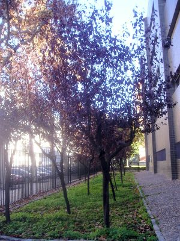
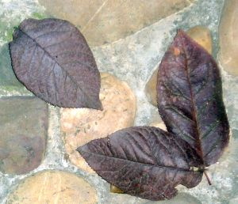

|
Prunus
cerasifera Ehrh., Gartenkalender 4 (1784)
cv. "atropurpurea"
P. cerasifera subsp. pissardii; P. ceracifera var. pissardii |
Rosáceas |
| Ciruelo japonés, mirabolano, ciruelo de pisard | Árbol caducifolio |
|
Árbol caducifolio, de 4 a 6 metros de altura; corteza lisa, oscura; copa abierta y redondeada. Hojas alternas, pecioladas, simples; pecíolo c. 1,5 cm, glandulífero; lámina de 2-7 x 2-4 cm, ovada o elíptica, aserrada, aguda, glabra salvo el nervio medio por el envés, de color verde oscuro cuando joven, luego púrpura. Flores generalmente solitarias, de 2-2,5 cm. de diámetro, de color blanco o rosadas; aparecen antes que las hojas entre Marzo y Abril. Fruto de tipo drupa, de c. 2,5 cm, de un rojizo amarillento; madura en verano. |
 Fotos: Jesús Mª del Río Domínguez, 2005 |
|  |
Observaciones: El nombre específico viene del latín cerasus, cereza, con el sufijo fer, llevar, producir, aludiendo a que lleva frutos que asemejan cerezas. La mayoría de los ejemplares del Campus nunca florecen por estar situados en un lugar sombrío. |
| Área de origen.- Oeste de Asia: Cáucaso y Península de Crimea | |
| Uso en el campus: 32 ejemplares, 30 de ellos alineados formando un conjunto ornamental. |
Localización: Zona Central del
Campus: |
| (1) Sánchez de Lorenzo Cáceres, J.M. (coord., 2003) Flora Ornamental Española, Tomo 3. | |
| Jesús Mª del Río Domínguez (2005) & Carlos Romero Zarco (XII/2006) | |